글자 없는 이미지 + 글자 데이터 합성본. 프롬프트는 각 카드 아래.
젠슨 황 엔비디아 CEO 사임 소식에 시장이 흔들렸습니다. 美 개미는 30분 만에 1500억을 샀다는 보도도 나왔죠. 50대 계좌라면 지금은 '무엇을 사느냐'보다 '어떻게 지키느냐'가 먼저입니다. ※ 특정 종목 매수·매도 권유가 아닙니다. #젠슨황 #엔비디아 #주식 #50대재테크 #미국주식
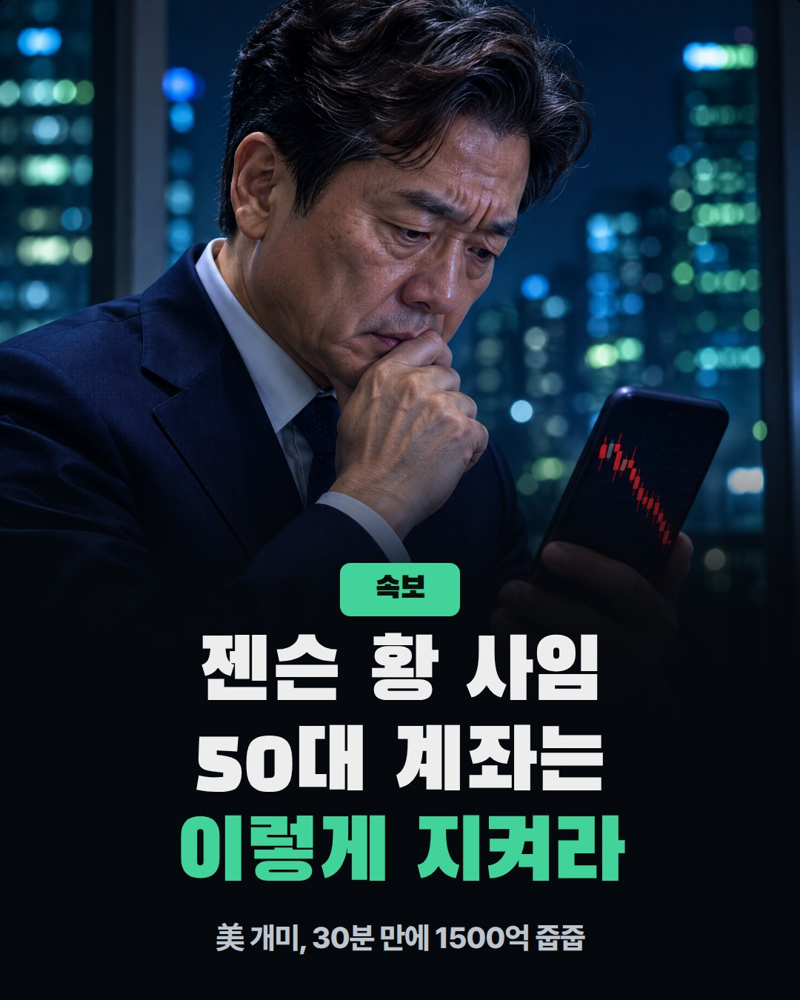
Dramatic editorial photo: a Korean man in his early 50s in a dark navy suit looking down at a smartphone showing a red falling candlestick chart, night city office window with blue and green bokeh behind him, moody cinematic lighting, high contrast, deep navy-black tones. Subject fills the upper 60% of the frame; the bottom 40% fades smoothly into near-black empty space. Photorealistic, vertical 4:5. No text, no letters, no numbers, no logos, no watermark.
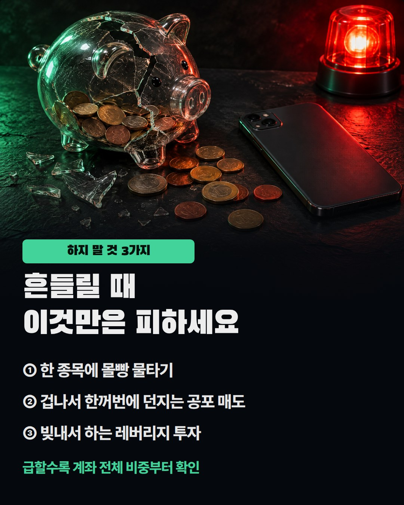
Dark moody still life on a black slate desk: a cracked glass piggy bank, scattered coins, a smartphone face-down, a red warning light glow, dramatic top-down lighting with green and red rim light. Objects occupy the upper 45% of the frame; the lower 55% is empty smooth near-black surface. Photorealistic, vertical 4:5. No text, no letters, no numbers, no logos, no screens showing text.
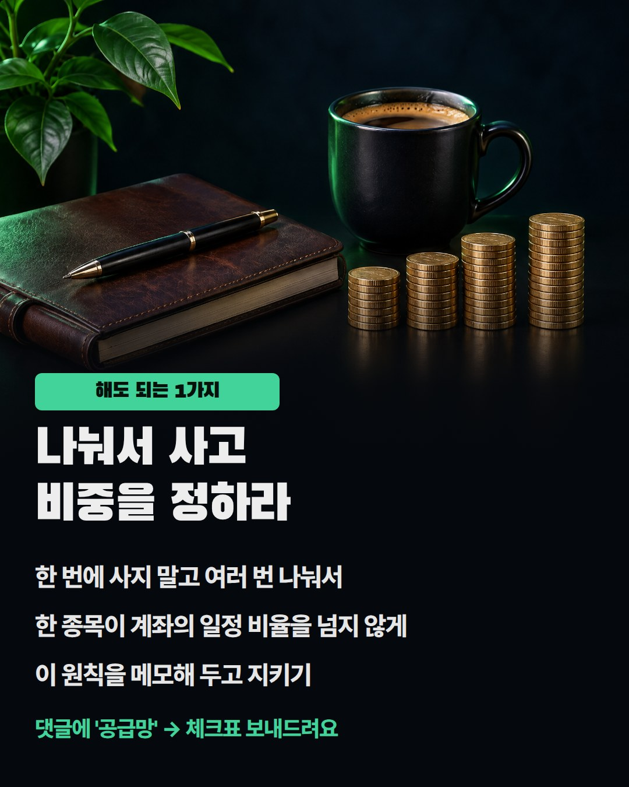
Calm dark editorial still life: a leather notebook with a pen, a cup of coffee, a small stack of coins arranged into neat equal piles, soft green rim light on a deep navy-black background. Objects occupy the upper 45% of the frame; the lower 55% is empty smooth near-black surface. Photorealistic, vertical 4:5. No text, no letters, no numbers, no logos.
월급 대신 배당이 들어오는 노후, 다들 꿈꾸시죠. 배당으로 생활비를 만든 사례가 화제지만, 수익이 보장되는 건 아닙니다. 은퇴 5년 전부터 준비할 것 3가지만 정리했어요. ※ 투자 권유가 아닙니다. #배당 #배당주 #월배당 #노후준비 #은퇴
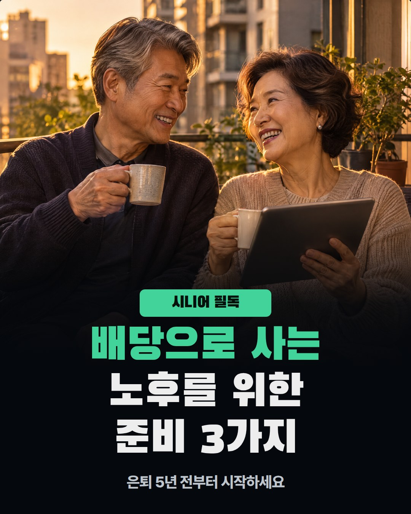
Editorial photo: a relaxed Korean couple in their late 50s having coffee on an apartment balcony at golden hour, one holding a tablet, warm peaceful mood, cinematic contrast with deep shadows. Subjects fill the upper 60% of the frame; the bottom 40% fades smoothly into near-black empty space. Photorealistic, vertical 4:5. No text, no letters, no numbers, no logos, no watermark.
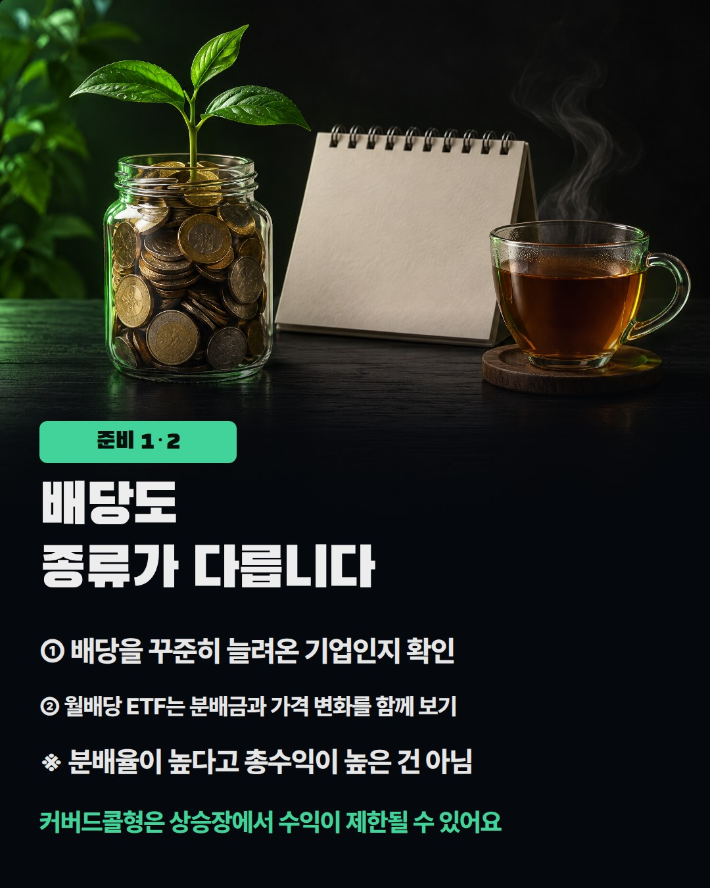
Dark still life: a glass jar filled with coins with a small green plant sprouting from it, a calendar page and a cup of tea on a black wooden table, soft green rim light. Objects occupy the upper 45% of the frame; the lower 55% is empty smooth near-black surface. Photorealistic, vertical 4:5. No text, no letters, no numbers, no logos.
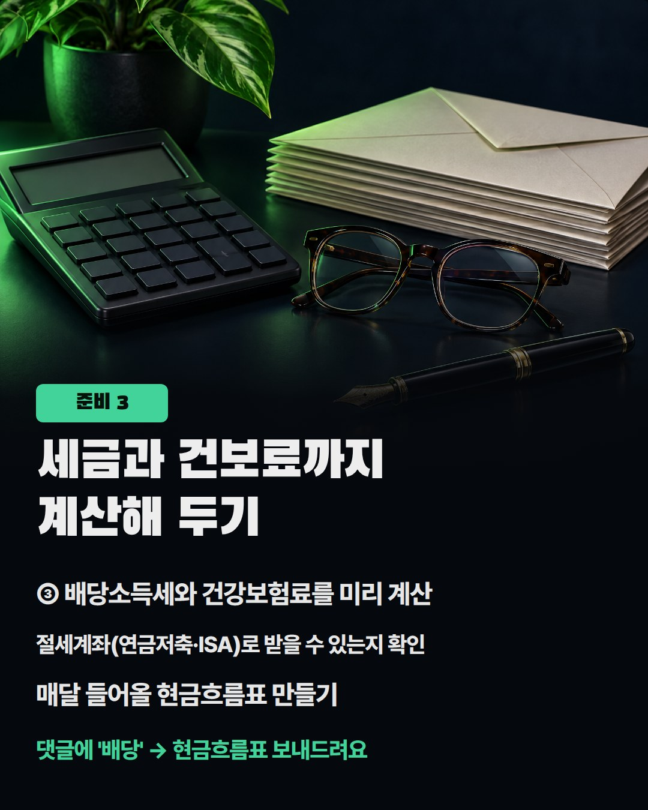
Dark editorial still life: a calculator, reading glasses, a fountain pen and neatly stacked envelopes on a deep navy desk, soft green accent light. Objects occupy the upper 45% of the frame; the lower 55% is empty smooth near-black surface. Photorealistic, vertical 4:5. No text, no letters, no numbers on any object, no logos.
60에 시작해도 늦지 않습니다. 시니어가 1억을 모으려면 '많이 버는 것'보다 '새는 돈을 막고, 오래 굴리는 것'이 핵심이에요. 현실 루틴 3가지를 정리했습니다. #시니어 #1억모으기 #노후준비 #재테크 #은퇴준비
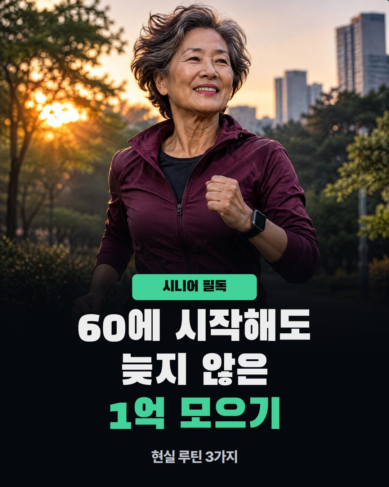
Editorial photo: an energetic Korean woman in her early 60s walking briskly in a city park at dawn in sportswear, confident smile, cinematic contrast, deep shadows. Subject fills the upper 60% of the frame; the bottom 40% fades smoothly into near-black empty space. Photorealistic, vertical 4:5. No text, no letters, no numbers, no logos, no watermark.
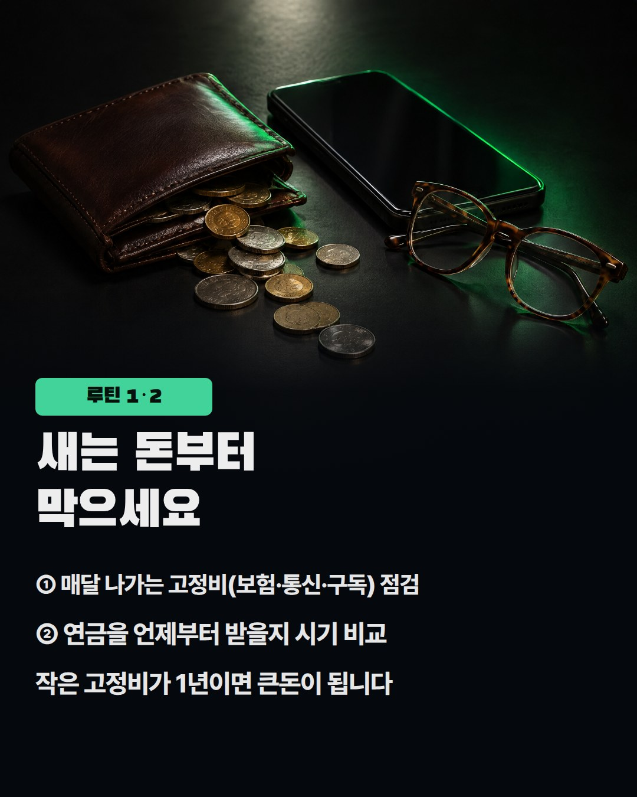
Dark still life: a wallet with a small leak of coins flowing out onto a black table, a phone and a pair of glasses beside it, dramatic top light with green rim light. Objects occupy the upper 45% of the frame; the lower 55% is empty smooth near-black surface. Photorealistic, vertical 4:5. No text, no letters, no numbers, no logos.
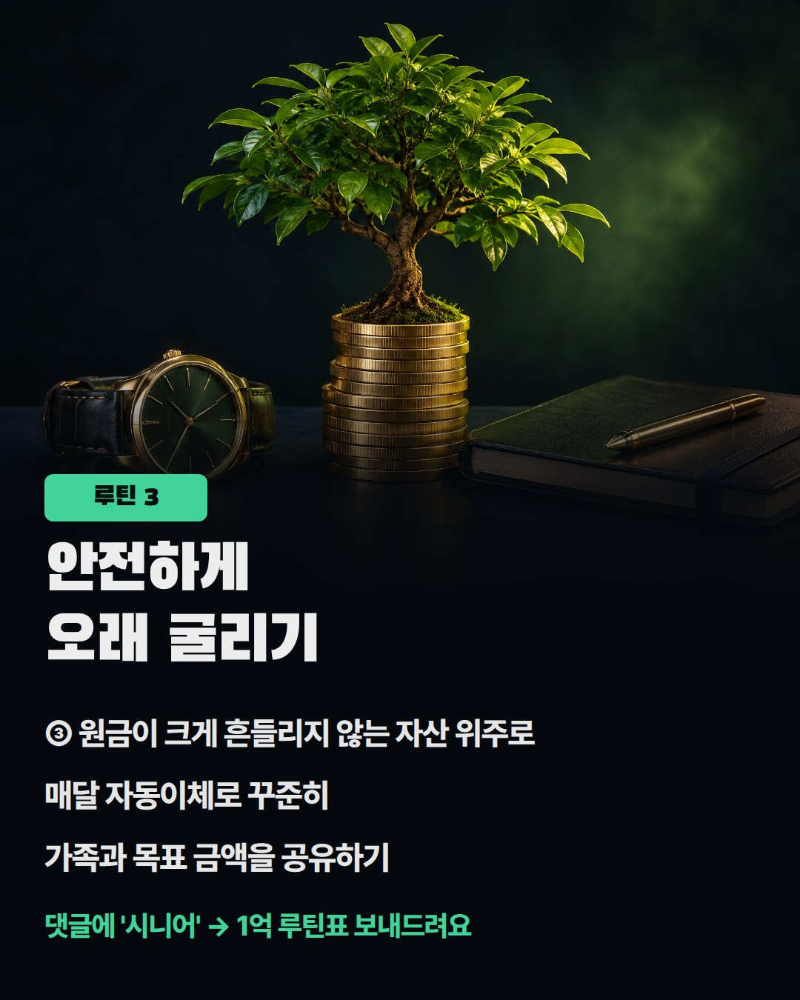
Dark editorial still life: a small potted tree growing from a stack of coins, a wristwatch and a notebook on a deep navy table, warm green accent light. Objects occupy the upper 45% of the frame; the lower 55% is empty smooth near-black surface. Photorealistic, vertical 4:5. No text, no letters, no numbers, no logos.
제미나이, 클로드 같은 AI 검색이 1년 새 크게 늘었습니다. 경험이 많은 50·60대일수록 AI를 '도구'로 쓰면 할 수 있는 일이 많아요. 시작하기 쉬운 AI 부업을 정리했습니다. ※ 수익은 사람마다 다릅니다. #AI부업 #노후부업 #챗GPT #제미나이 #시니어
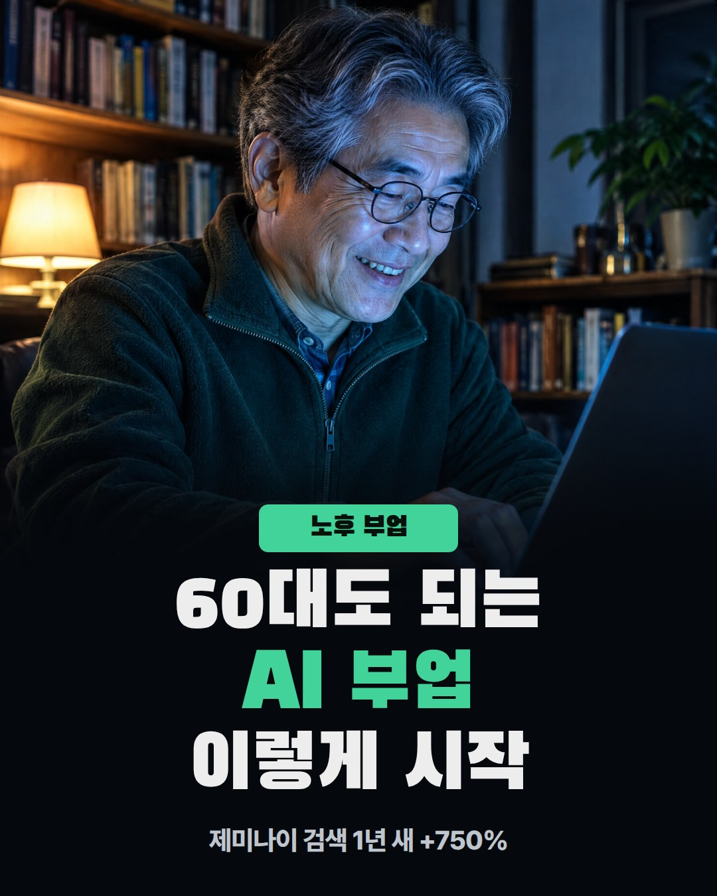
Editorial photo: a cheerful Korean man in his early 60s with reading glasses typing on a laptop in a dim home study at night, the laptop screen glow lighting his face in cool blue-green, cinematic contrast. Subject fills the upper 60% of the frame; the bottom 40% fades smoothly into near-black empty space. Photorealistic, vertical 4:5. No text on screen, no letters, no numbers, no logos, no watermark.
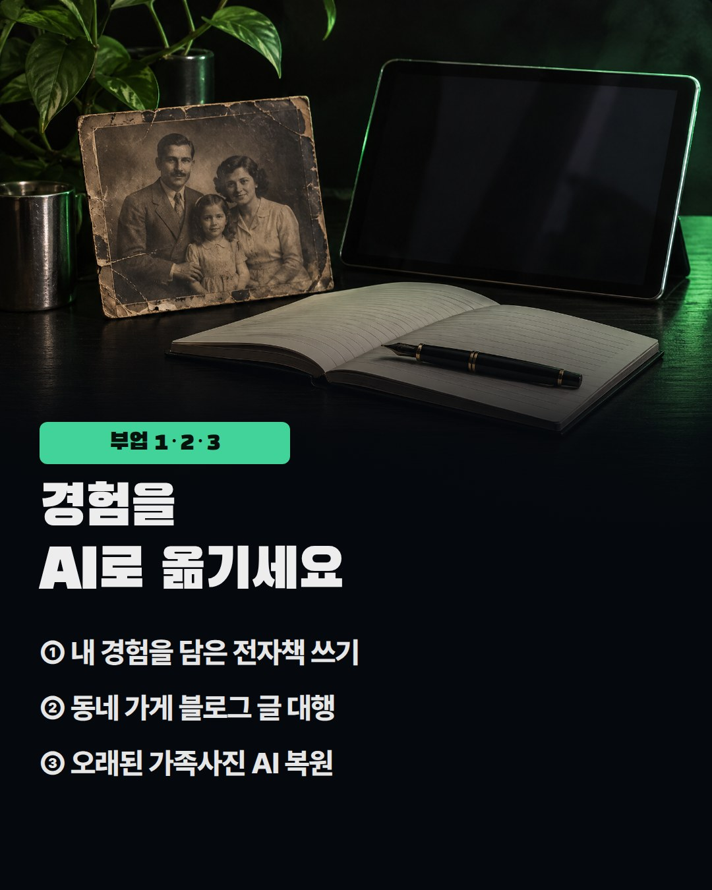
Dark still life: an old faded family photograph next to a modern tablet, an open notebook and a pen on a black wooden desk, soft green rim light. Objects occupy the upper 45% of the frame; the lower 55% is empty smooth near-black surface. Photorealistic, vertical 4:5. No text, no letters, no numbers, no logos, no readable screen content.
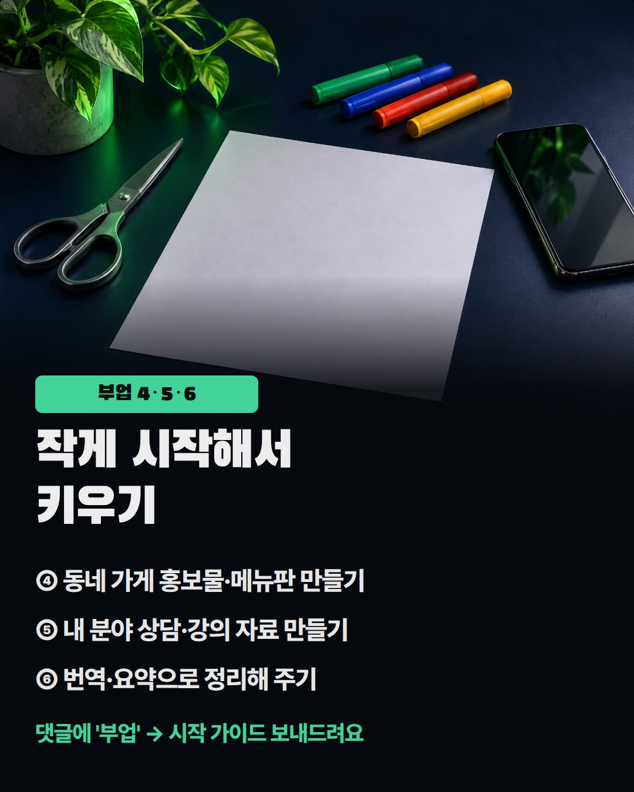
Dark editorial still life: a small printed poster blank sheet, scissors, colored markers and a smartphone on a deep navy desk, soft green accent light. Objects occupy the upper 45% of the frame; the lower 55% is empty smooth near-black surface. Photorealistic, vertical 4:5. No text, no letters, no numbers, no logos.
젠슨 황은 떠나도 'GPU 26만장 공급은 유지'된다는 발표가 나왔습니다. AI는 큰 회사만의 이야기가 아니에요. 동네 가게 사장님이 바로 써볼 수 있는 'AI 직원'을 정리했습니다. #AI직원 #소상공인 #사장님 #챗GPT #AI활용
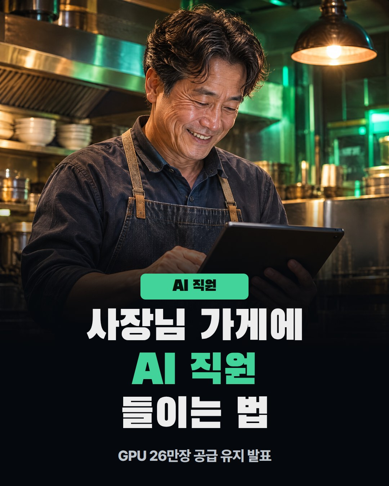
Editorial photo: a Korean restaurant owner in his early 50s wearing an apron, smiling while looking at a tablet in his small diner kitchen at night, warm practical light with cool green accents, cinematic contrast. Subject fills the upper 60% of the frame; the bottom 40% fades smoothly into near-black empty space. Photorealistic, vertical 4:5. No text, no letters, no numbers, no logos, no signage, no watermark.
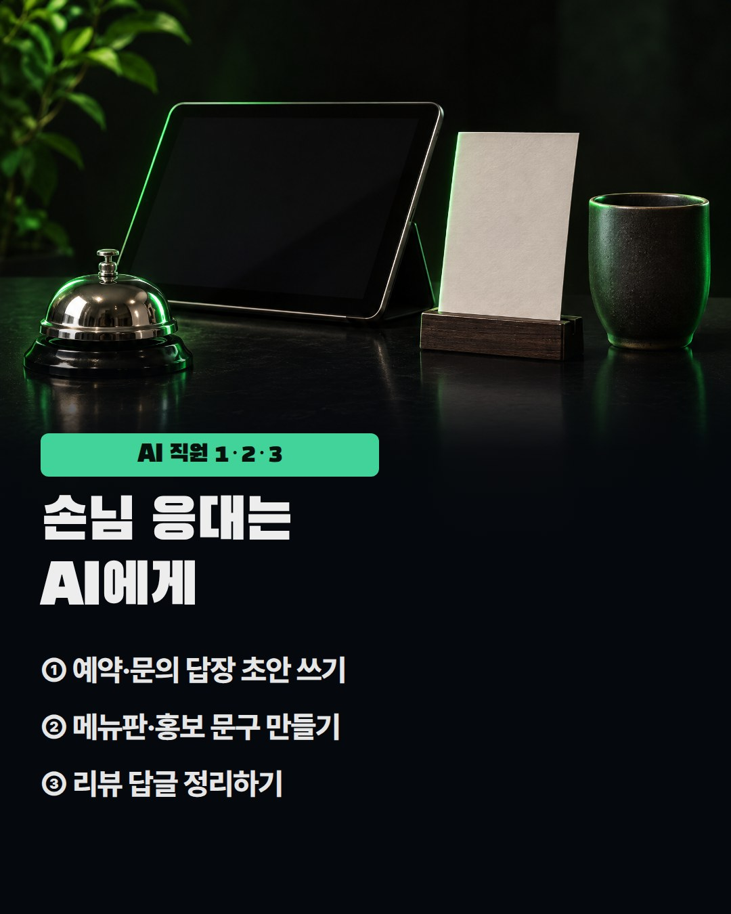
Dark still life: a restaurant order bell, a tablet, a small menu holder with a blank card and a cup on a black counter, soft green rim light. Objects occupy the upper 45% of the frame; the lower 55% is empty smooth near-black surface. Photorealistic, vertical 4:5. No text, no letters, no numbers, no logos.
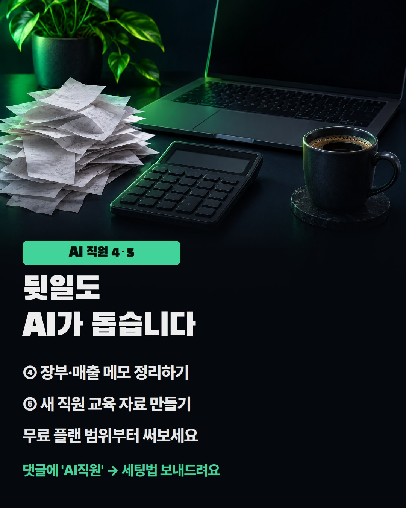
Dark editorial still life: a cash receipt pile, a calculator, a laptop and a cup of coffee on a deep navy desk, soft green accent light. Objects occupy the upper 45% of the frame; the lower 55% is empty smooth near-black surface. Photorealistic, vertical 4:5. No text, no letters, no numbers, no readable receipts, no logos.
GPT가 시키는 대로 7일간 음식점을 창업해 본 영상이 50만 회 넘게 봤어요. 은퇴 후 창업, 돈 들이기 전에 AI에게 먼저 계산을 맡겨 보세요. ※ AI 결과는 참고용입니다. #은퇴창업 #창업 #AI창업 #소상공인 #챗GPT
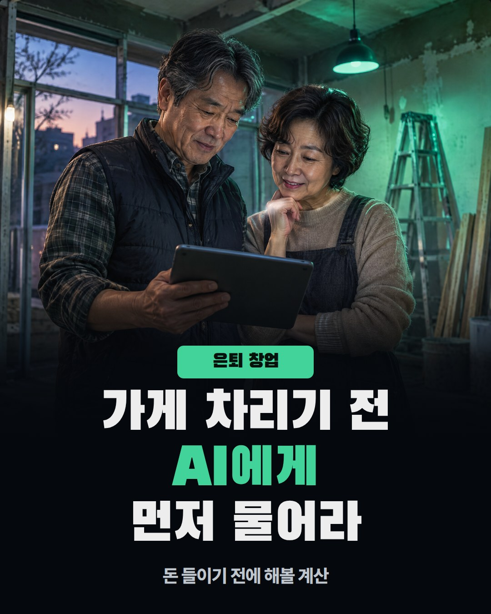
Editorial photo: a Korean couple in their late 50s standing inside an empty small shop space under renovation at dusk, looking at a tablet together, hopeful but careful, cinematic contrast with deep shadows and a cool green accent light. Subjects fill the upper 60% of the frame; the bottom 40% fades smoothly into near-black empty space. Photorealistic, vertical 4:5. No text, no letters, no numbers, no logos, no signage, no watermark.
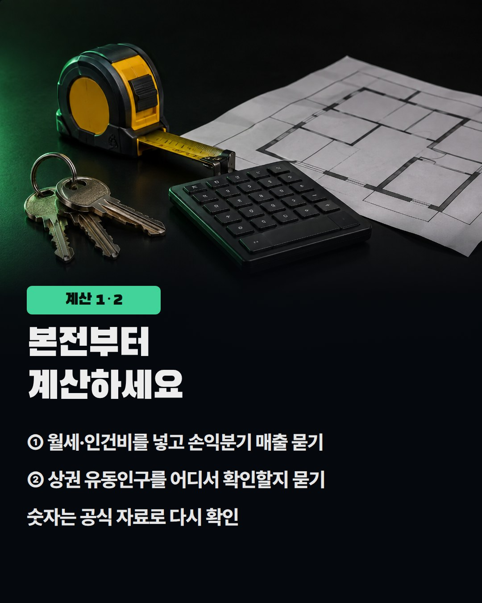
Dark still life: a set of shop keys, a measuring tape, a calculator and a folded floor plan sheet with no writing on a black table, soft green rim light. Objects occupy the upper 45% of the frame; the lower 55% is empty smooth near-black surface. Photorealistic, vertical 4:5. No text, no letters, no numbers, no logos.
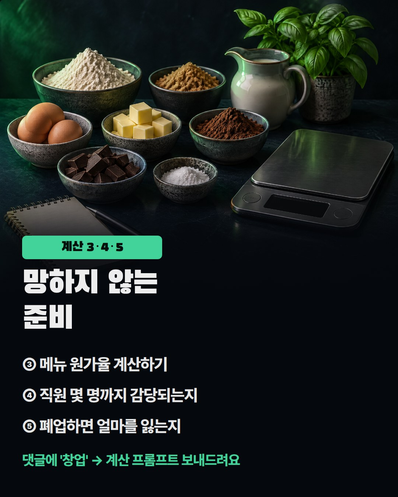
Dark editorial still life: kitchen ingredients neatly arranged in small bowls beside a digital scale and a notebook on a deep navy counter, soft green accent light. Objects occupy the upper 45% of the frame; the lower 55% is empty smooth near-black surface. Photorealistic, vertical 4:5. No text, no letters, no numbers on the scale, no logos.